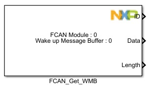
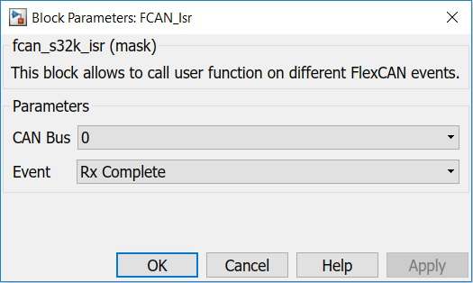

FCAN ISR Block
This block allows to call user function on different FlexCAN events: Rx Complete, Rx FIFO Complete, Tx Complete, Wake Up Timeout, Wake Up Match, Rx FIFO Warning and Rx FIFO Overflow.
Block Image
Inputs:
- None
Outputs:
For Rx Complete event:- Trigger (Function Call)
- MB Index (uint8)
- ID (uint32)
- Data (uint8(8))
- Length (uint8)
- Timestamp (uint16)
- Trigger (Function Call)
- ID (uint32)
- Data (uint8(8))
- Length (uint8)
- Timestamp (uint16)
- Trigger (Function Call
- MB Index (uint8)
- Trgiger (Function Call)
Parameters and Dialog Box
CAN Bus
Selects the CAN Bus.
Event
Selects the FlexCAN event.
- Rx Complete
- Rx FIFO Complete
- Tx Complete
- Wake Up Timeout
- Wake Up Match
- Rx FIFO Warning
- Rx FIFO Overflow
Block Dependency
Block Miscellaneous Details
- None